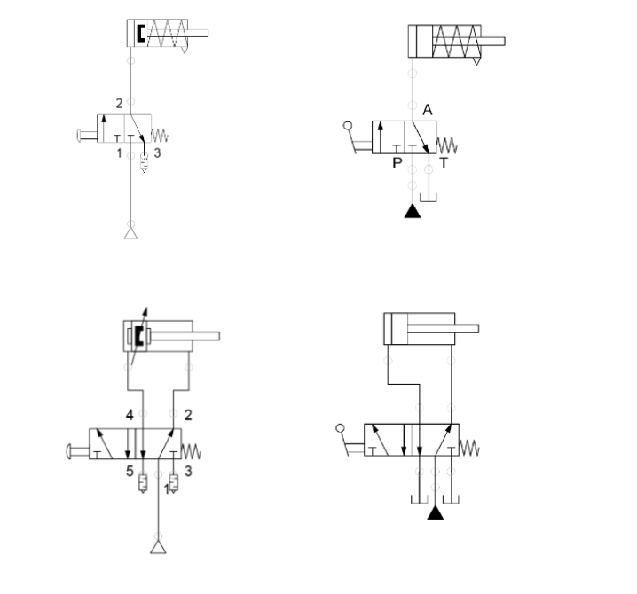

Portafolio de Actividades
Automatización industrial
Departamento de Ciencias e Ingenierías | Universidad Iberoamericana Puebla, México.
Central de control
- Resumen -
La neumática es la tecnología que emplea un gas (normalmente aire comprimido) como modo de transmisión de la energía necesaria para mover y hacer funcionar mecanismos y/o máquinas. Mientras que en la hidraúlica son los fluidos (líquidos y gases) los que se utilizan para la transmisión de potencia en la neumática es solo el aire comprimido.
- Introducción -
Neumática
La neumática se basa en la transmisión de energía a través de gases compresibles, como el aire comprimido. La compresión del aire genera presión, que puede utilizarse para realizar trabajo mecánico. La neumática se emplea en una amplia gama de aplicaciones industriales, desde sistemas de automatización en líneas de producción hasta herramientas portátiles, como taladros y pistolas de impacto. También se utiliza en la operación de válvulas, actuadores y cilindros en maquinaria industrial. La neumática es esencial en la automatización industrial porque ofrece ventajas como la simplicidad, la rapidez de respuesta y la facilidad de control. Además, el aire comprimido es una fuente de energía abundante y económica en comparación con otros tipos de energía.
- Materiales -
Lista
- Desarrollo -
Basandonos en los circuitos presentados en la imagen siguiente, se procedio a realizar el armado fisico de los circuitos con material antes mencionado
Simulación
Se realizaron las siguientes simulaciones para esta practica

Diseño
No fue necesario diseñar algo en esta practica
Construcción
A continuacion se mostrarán los videos de como ya esta terminada la practica.
- Resultados -
A continuacion se muestran los videos de las actividades funcionando
- Conclusiones -
Se logró realizar todas las actividades propuestas en clase por lo que la práctica resultó como esperabamos.
- Referencias -
Microchip AVR® microcontroller primer: programming and interfacing, third edition (synthesis lectures on digital circuits and systems), BARRETT, Steven F. Pack Daniel J., Editorial Morgan & Claypool, 2019.
K. He, X. Zhang, S. Ren and J. Sun, "Deep Residual Learning for Image Recognition," 2016 IEEE Conference on Computer Vision and Pattern Recognition (CVPR), Las Vegas, NV, USA, 2016, pp. 770-778, doi: 10.1109/CVPR.2016.90.
J. D. Hunter, "Matplotlib: A 2D Graphics Environment," in Computing in Science & Engineering, vol. 9, no. 3, pp. 90-95, May-June 2007, doi: 10.1109/MCSE.2007.55.
- Descargables -
Descargar documento PDF: documento.pdf
Descargar codigo Arduino: codigo.ino
Descargar Archivo 3d .STL: pieza.stl